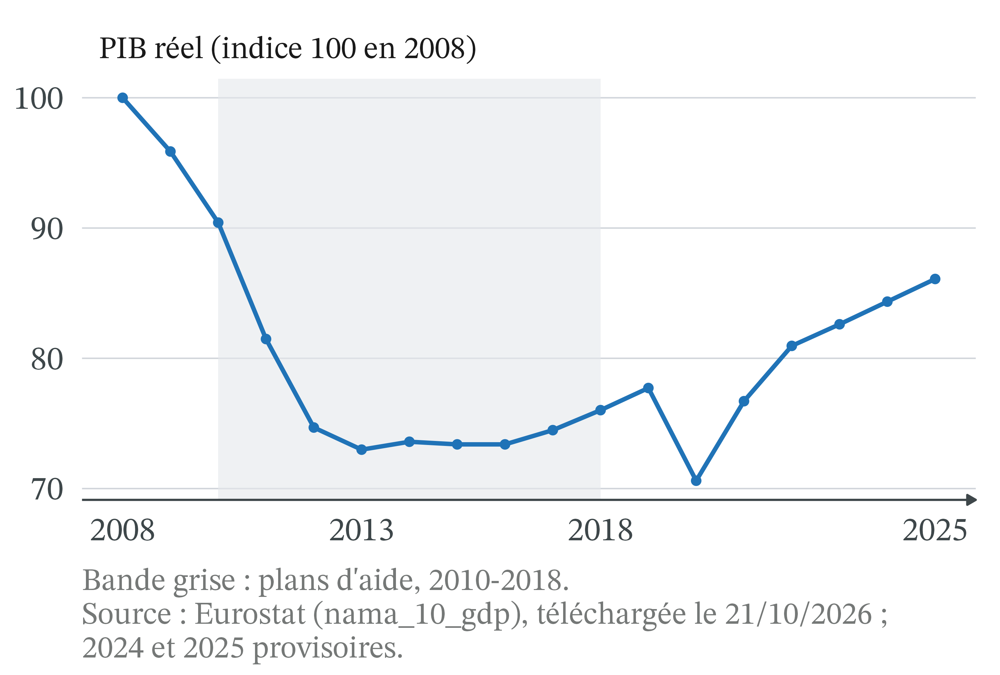
La Grèce, 2010-2015 : l’austérité a-t-elle marché ?
CM 8 · Partie II · La monnaie, l’État, le monde
ATER en économie, Université Clermont Auvergne
La Grèce révise ses comptes publics (2009-2010)
- Octobre 2009 : le gouvernement grec révise fortement ses chiffres de déficit ; février 2010 : il reconnaît des comptes mal déclarés.
- Mars 2010 : le coût de ses emprunts devient « insoutenable » (notre traduction).
- Mai 2010 : premier plan d’aide de la zone euro et du FMI, puis deux autres (2012, 2015) : environ 289 Md€ de prêts. En échange, l’État baisse ses dépenses et augmente ses impôts : c’est l’austérité.
Sources : Commission européenne, 08/01/2010 (révision d’octobre 2009) ; MES, page « Greece » (février à mai 2010), consultée le 21/10/2026.
Conséquence (1/3) : le PIB réel recule de 27 % entre 2008 et 2013
- Indice 100 en 2008 : le PIB réel tombe à 73 en 2013.
- Bande grise : les trois plans d’aide (2010-2018).
- En 2025, il reste inférieur de 13,9 % à son niveau de 2008 (Eurostat).
Conséquence (2/3) : le chômage passe de 9,8 % à 27,8 % des actifs
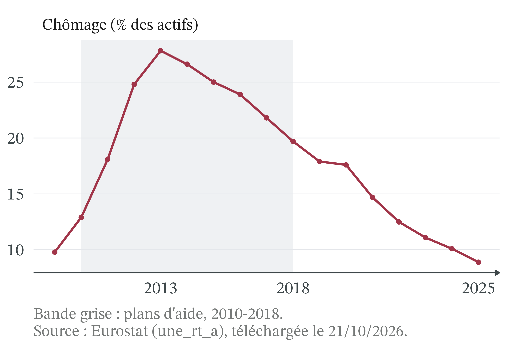
- Chômage des 15-74 ans : 9,8 % des actifs en 2009 ; 27,8 % en 2013, plus d’un actif sur quatre.
- Zone euro en 2013 : 12,2 %, moins de la moitié du taux grec.
- Décrue ensuite, jusqu’à 8,9 % en 2025.
Conséquence (3/3) : la dette passe de 147,8 % à 180,4 % du PIB
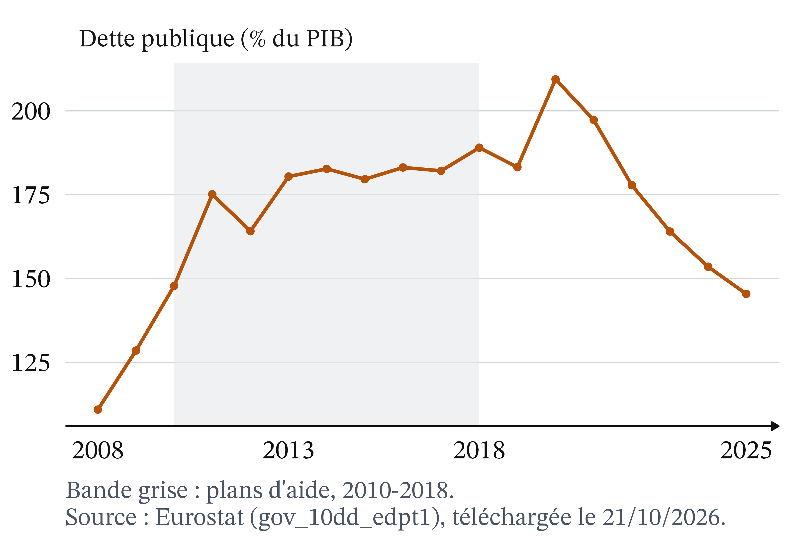
- L’austérité devait réduire la dette ; elle monte pendant les plans d’aide.
- 2010 : 147,8 % du PIB ; 2013 : 180,4 % ; 2018 : 189,0 %.
- Pic de 209,4 % en 2020 (crise sanitaire), puis baisse rapide : 145,4 % en 2025.
La question de la séance et les trois outils pour y répondre
L’austérité a-t-elle marché ? Pour quoi faire :
- alléger le poids de la dette ;
- retrouver la croissance ;
- regagner la confiance des prêteurs.
Trois outils simples : le multiplicateur, l’effet boule de neige de la dette, et une règle qui les relie. La réponse dépendra de l’objectif retenu.
Rappel (1/2) : PIB, solde public et dette
- PIB en volume, PIB en valeur : le PIB en valeur est mesuré en euros courants ; le PIB en volume (ou PIB réel) retire l’effet des prix.
- Solde public, solde primaire : recettes moins dépenses des administrations publiques (négatif = déficit) ; le solde primaire est le même solde sans les intérêts de la dette.
- Dette publique : un stock, la somme de ce que les administrations doivent ; on la rapporte au PIB, un flux annuel.
Rappel (2/2) : propension à consommer, taux réel, positif et normatif
- Propension marginale à consommer (c) : part d’un euro de revenu supplémentaire qui est consommée. Avec c = 0,8, un ménage qui gagne 100 € de plus en dépense 80.
- Taux d’intérêt réel : r ≈ i − π, le taux nominal moins l’inflation.
- Analyse positive et analyse normative : ce qui est (vérifiable) et ce qui devrait être (jugement de valeur).
Keynes (1936) : la demande fixe la production en sous-emploi
 1929 · auteur inconnu (archives Bettmann), domaine public, Wikimedia Commons
1929 · auteur inconnu (archives Bettmann), domaine public, Wikimedia Commons
John Maynard Keynes (1936), The General Theory of Employment, Interest and Money · école keynésienne. Quand des capacités de production restent inutilisées, c’est la demande qui fixe la production.
Une baisse de dépense réduit des revenus, donc d’autres dépenses : son effet sur le PIB est multiplié. Il peut dépasser son montant.
Austérité : définition et mesure hors effet de la conjoncture
Définition 1 (Austérité (ou consolidation budgétaire)) Politique qui réduit le déficit public en baissant les dépenses publiques, en augmentant les impôts, ou les deux. On la mesure par l’amélioration du solde public hors effet de la conjoncture, en points de PIB.
- Pourquoi corriger de la conjoncture : une récession creuse le déficit d’elle-même, sans que la politique change.
Grèce, 2009-2012 : hors conjoncture, le solde primaire gagne 14,8 points
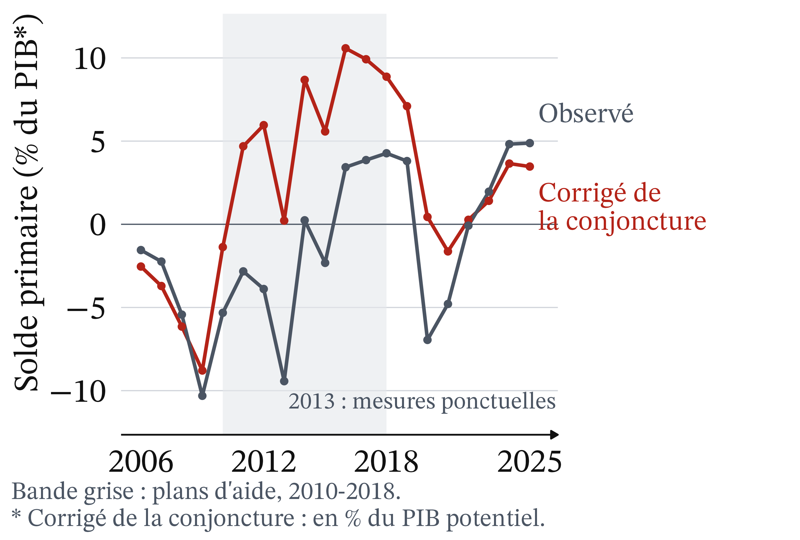
- Rouge : solde primaire corrigé de la conjoncture, en % du PIB potentiel ; gris : solde observé.
- De 2009 à 2012, le solde corrigé gagne 14,8 points.
- Le solde observé ne gagne que 6,4 points : selon cette estimation, la récession a effacé plus de la moitié de l’effort.
Source : Commission européenne, AMECO (UBLGIE, UBLGBP), printemps 2026, téléchargé le 22/10/2026.
Multiplicateur budgétaire : définition et cas le plus simple
Définition 2 (Multiplicateur budgétaire) Le multiplicateur (k) mesure la variation du PIB provoquée par une variation de la dépense publique : ΔPIB = k × Δ(dépense publique). Dans le cas le plus simple, il ne dépend que de la propension marginale à consommer : \(k = \dfrac{1}{1 - c}\).
- Avec c = 0,5, k = 2 ; avec c = 0,8, k = 5.
- À ne pas confondre avec le multiplicateur de crédit du CM 6.
Vagues du multiplicateur (1/3) : la première vague

- Un État fictif supprime 10 Md€ de commandes de travaux publics ; c = 0,5.
- Les entreprises de travaux publics perdent 10 Md€ de chiffre d’affaires : le PIB baisse de 10.
- Chaque barre donnera la baisse cumulée du PIB après une vague de plus.
Vagues du multiplicateur (2/3) : chaque vague vaut la moitié de la précédente
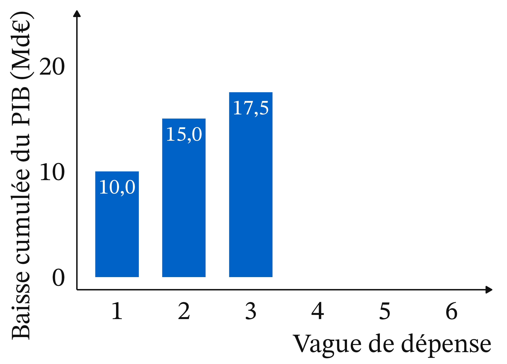
- Vague 2 : salariés et propriétaires perdent 10 de revenus et consomment 0,5 × 10 = 5 de moins.
- Vague 3 : les commerçants perdent 5 et consomment 0,5 × 5 = 2,5 de moins.
- Cumul : 17,5.
Vagues du multiplicateur (3/3) : le total approche k × 10 = 20 Md€
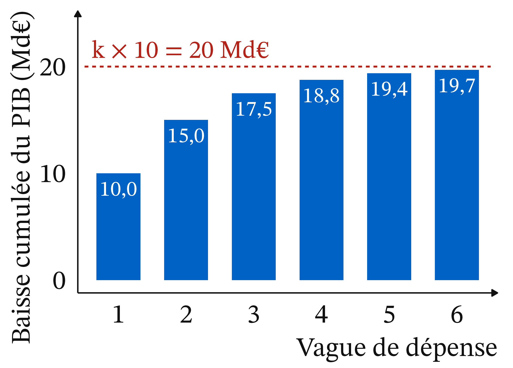
- 10 + 5 + 2,5 + 1,25 + … : les barres approchent 20 sans le dépasser.
- Le total vaut k × 10, avec k = 1 / (1 − 0,5) = 2.
- La coupe de 10 réduit le PIB de 20.
- Avec c = 0,8 : k = 1 / 0,2 = 5 ; la même coupe réduit le PIB de 50 Md€.
Point d’attention : le multiplicateur joue dans les deux sens
« Le multiplicateur ne concerne que les relances. » Faux.
- Une hausse de dépense augmente le PIB de k fois son montant.
- Une baisse le réduit d’autant : c’est le cas de l’austérité.
- Le mécanisme est le même : la dépense de l’un est le revenu d’un autre.
Le multiplicateur simple est un maximum : environ 0,5 en temps normal
- Une partie de chaque euro de revenu part en impôts, en épargne ou en importations : elle ne relance pas la vague suivante.
- La banque centrale peut baisser ses taux pour soutenir l’activité.
- Les multiplicateurs estimés sont donc bien plus petits : proches de 0,5 en temps normal, d’après les études citées par Blanchard et Leigh (2013).
Blanchard et Leigh (2013) : les prévisions ont sous-estimé le multiplicateur
 2008 · Eugene Salazar (FMI), domaine public, Wikimedia Commons
2008 · Eugene Salazar (FMI), domaine public, Wikimedia Commons
Olivier Blanchard et Daniel Leigh (2013), « Growth Forecast Errors and Fiscal Multipliers », American Economic Review · macroéconomie appliquée (FMI). Plus un pays européen prévoyait une austérité forte en 2010, plus sa croissance a été inférieure aux prévisions.
L’explication la plus simple : les multiplicateurs étaient bien plus élevés que ceux que les prévisionnistes supposaient.
Blanchard et Leigh : méthode et ordre de grandeur du multiplicateur
- Printemps 2010 : le FMI publie, pour 26 pays européens, une prévision de croissance et une prévision d’austérité.
- On compare la croissance réalisée en 2010 et 2011 à la croissance prévue.
- Un point de PIB d’austérité prévue en plus : un PIB inférieur d’environ 1 % à la prévision.
- Si les prévisions supposaient k ≈ 0,5, le vrai multiplicateur était de l’ordre de 1,5.
Pourquoi un multiplicateur élevé en 2010 : trois raisons et un cas grec
- Les taux d’intérêt, déjà au plancher, ne pouvaient plus baisser pour compenser.
- Le crédit fonctionnait mal : ménages et entreprises dépensaient selon leur revenu du moment.
- L’économie avait beaucoup de capacités inutilisées.
- Membre de la zone euro, la Grèce ne pouvait pas non plus dévaluer sa monnaie.
Domar (1944) : le poids de la dette dépend de la croissance
Evsey Domar (1944), « The “Burden of the Debt” and the National Income », American Economic Review · keynésien de la croissance. Ce qui compte n’est pas le montant de la dette, mais son poids dans le revenu national.
- Dans d = dette / PIB, les intérêts font grossir le numérateur au rythme r ; la croissance fait grossir le dénominateur au rythme g.
- Si r dépasse g, la dette grossit plus vite que le PIB, même sans nouveau déficit.
Effet boule de neige et solde primaire stabilisant : définitions
Définition 3 (Effet boule de neige) Variation du ratio d due au seul écart entre le taux d’intérêt et la croissance : (r − g) × d. Le ratio évolue selon \(\Delta d \approx (r - g) \times d - s\), où s est le solde primaire en % du PIB (positif = excédent).
Définition 4 (Solde primaire stabilisant) Excédent primaire qui maintient le ratio d constant : s = (r − g) × d.
Boule de neige (1/3) : sans excédent primaire, d atteint 222 %
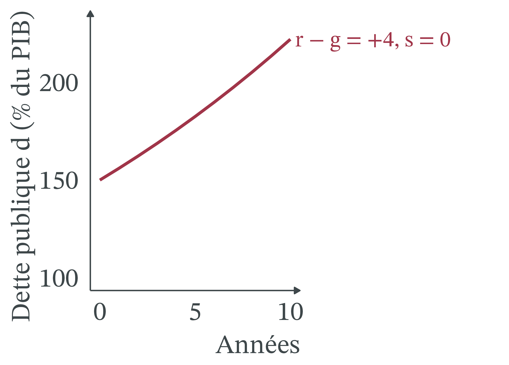
- Départ : d = 150 % (exemple fictif).
- r − g = +4 points, aucun excédent primaire.
- Chaque année, d gagne 4 % de lui-même : la hausse s’accélère, jusqu’à 222 % en dix ans.
Boule de neige (2/3) : un excédent de 6 % du PIB stabilise d
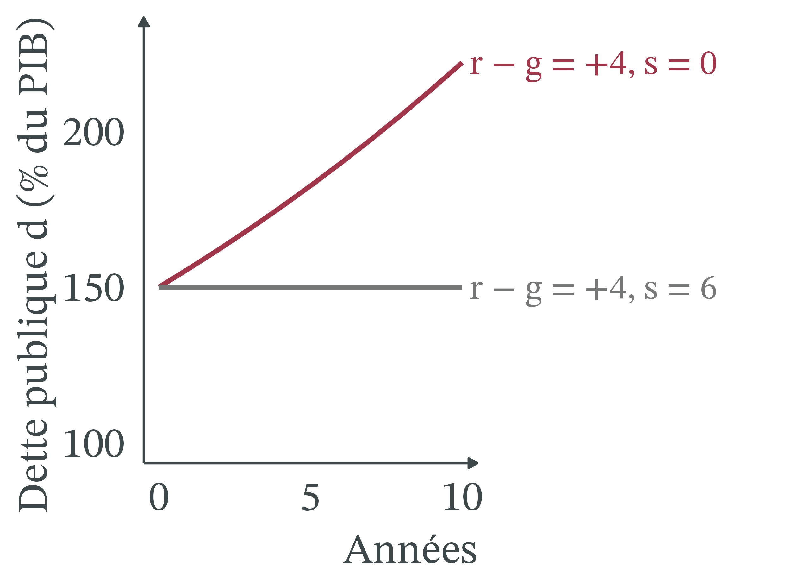
- Même écart, r − g = +4.
- Solde stabilisant : s = 4 % × 150 = 6 % du PIB chaque année.
- Le ratio reste à 150 % : un effort budgétaire considérable, chaque année.
Boule de neige (3/3) : avec r − g = −2, d descend à 123 %
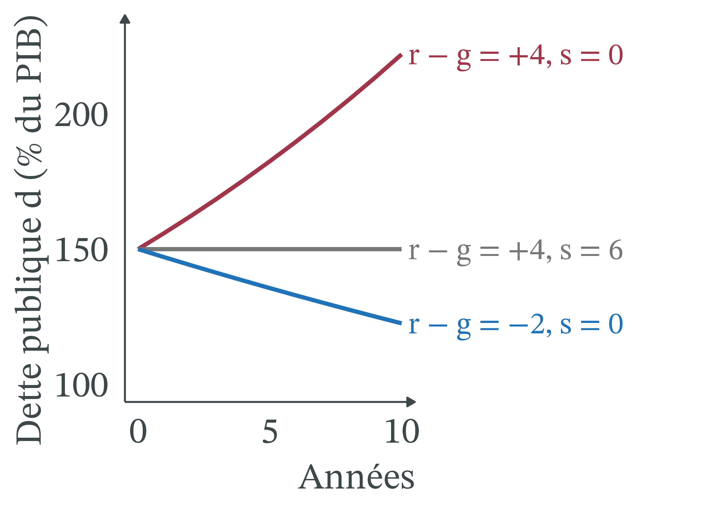
- r − g = −2 points, aucun excédent primaire.
- Le ratio descend à 123 % en dix ans, même avec un solde primaire nul.
- Quand g dépasse r, la dette s’allège d’elle-même.
Exemple chiffré : la boule de neige en trois situations
d = 150 %, r = 3 %, Δd ≈ (r − g) × d − s.
- Récession, g = −5 % : r − g = 8 points ; effet 8 % × 150 = +12 points ; d passe à 162 % (s = 0).
- Stabiliser d : excédent primaire de 12 % du PIB, intenable en récession.
- g = +2 % : effet +1,5 point ; un excédent de 1,5 % suffit.
- r = 2 %, g = 4 % : effet −3 points, même avec s = 0.
Avec une dette lourde, la croissance compte autant que le solde primaire.
Méthode : lire une variation du ratio dette / PIB en trois questions
- Quel est l’écart entre le taux d’intérêt et la croissance ? Multiplié par le ratio de départ, il donne l’effet boule de neige.
- Quel est le solde primaire ? Un déficit primaire alourdit le ratio, un excédent l’allège.
- Reste-t-il un écart avec la variation observée ? Il vient d’opérations hors solde (annulation de dette, aide aux banques) ou de l’imprécision de l’approximation.
Couper la dépense : le numérateur et le dénominateur baissent
Une coupe réduit la dette (on emprunte moins) et le PIB (de k fois la coupe). Lequel gagne ?
| Étape | k = 0,5 (prévision) | k = 1,5 (réalité de 2010-2011) |
|---|---|---|
| 1. L’État coupe 10 Md€ | Dette : 300 → 290 | Dette : 300 → 290 |
| 2. Le PIB réagit | −5 : 195 Md€ | −15 : 185 Md€ |
| 3. Dette / PIB | 290 / 195 = 148,7 % | 290 / 185 = 156,8 % |
| 4. Résultat (départ : 150 %) | Le ratio baisse | Le ratio monte |
Ratio après la coupe (1/3) : le ratio croît avec le multiplicateur
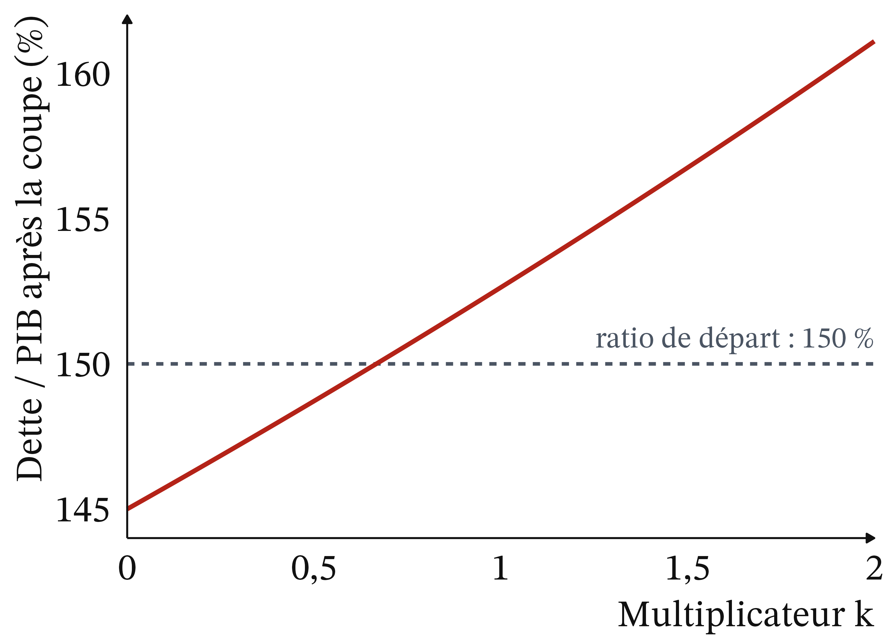
- Même exemple : dette 300, PIB 200, coupe de 10 Md€.
- Tirets : le ratio de départ, 150 %.
- Plus k est grand, plus le PIB baisse, plus le ratio après la coupe est élevé.
Ratio après la coupe (2/3) : k = 0,5, le ratio baisse à 148,7 %
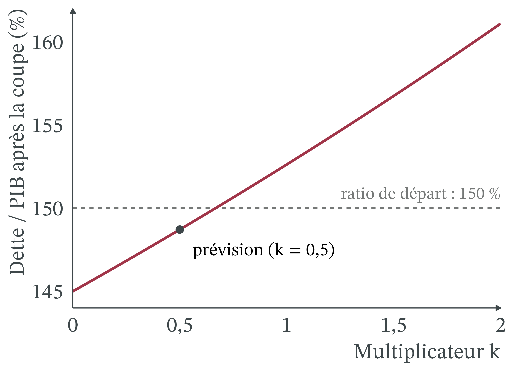
- Hypothèse des prévisions : k = 0,5.
- Le PIB baisse de 5 et passe à 195.
- 290 / 195 = 148,7 % : sous les tirets, l’austérité allège le poids de la dette.
- C’est le calcul des prévisions de 2010.
Ratio après la coupe (3/3) : au-delà de k = 0,67, il monte
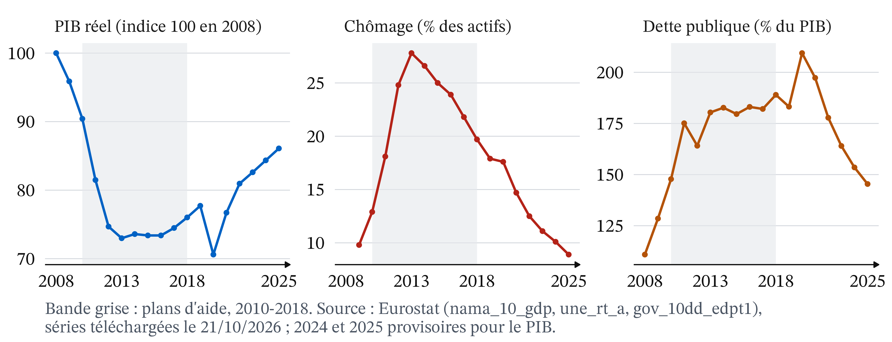
- k = 1,5 : le PIB passe à 185, le ratio monte à 156,8 %.
- Seuil : k = 0,67. Au-dessus, la coupe alourdit le poids de la dette.
- Cette règle vaut à court terme.
Exemple chiffré : couper 10 Md€ quand la dette vaut 150 % du PIB
Dette 300 Md€, PIB 200 Md€ (d = 150 %) ; coupe de 10 Md€, dette à 290.
- k = 0,5 : PIB à 195 ; 290 / 195 = 148,7 %, le ratio baisse.
- k = 1,5 : PIB à 185 ; 290 / 185 = 156,8 %, le ratio monte.
- Dette : −3,3 % ; PIB : −k × 5 %. Le ratio baisse seulement si k × d < 1 (d = 1,5 ; k < 0,67).
- k × d : 0,75 < 1 (baisse) ; 2,25 > 1 (hausse).
- Les recettes fiscales baissent avec le PIB : le ratio monte encore plus.
Point d’attention : un ratio en hausse ne prouve pas un emprunt accru
« Le ratio dette / PIB a monté, donc l’État a emprunté davantage. » Pas forcément : le dénominateur peut baisser.
- Grèce, fin 2010 à fin 2013 : dette d’environ 330 à 321 Md€ (décote de 53,5 % en 2012 sur les obligations des investisseurs privés).
- PIB en valeur : −20,3 %.
- Ratio : de 147,8 % à 180,4 %, soit +33 points.
Application : la Grèce de 2008 à 2025, trois séries réunies

Le PIB réel chute de 27 % de 2008 à 2013 ; la dette monte jusqu’en 2018, bondit en 2020, puis baisse vite.
Décomposition 2011 : l’effet boule de neige explique l’essentiel
Taux apparent i = intérêts versés / dette de l’année précédente, comparé à la croissance du PIB en valeur.
- d de 2010 : 147,8 % ; i = 4,7 % ; croissance −9,0 %.
- Écart i − croissance : +13,7 points ; effet boule de neige ≈ +20,3 points.
- Solde primaire s = −2,8 % du PIB : variation prévue ≈ 20,3 + 2,8 = +23,1 points.
- Variation observée : +27,3 points.
Source : Eurostat (gov_10dd_edpt1, nama_10_gdp), séries téléchargées le 21/10/2026 ; calculs du cours.
Décomposition 2023 : la croissance en valeur renverse la boule de neige
Même formule, autre signe.
- d de 2022 : 177,8 % ; i = 2,1 % ; croissance +8,7 %.
- Écart : −6,7 points ; effet boule de neige ≈ −11,8 points.
- Solde primaire s = +1,9 % du PIB : variation prévue ≈ −11,8 − 1,9 = −13,7 points.
- Variation observée : −13,8 points.
La croissance en valeur, gonflée par l’inflation, dépasse un taux apparent resté bas.
Source : Eurostat (gov_10dd_edpt1, nama_10_gdp), séries téléchargées le 21/10/2026 ; calculs du cours.
Dette grecque : à partir de 2012, des prêts plutôt que des titres
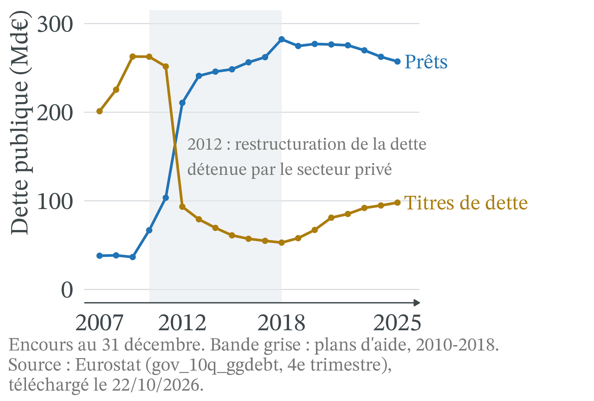
- Fin 2011 : surtout des titres de dette émis sur les marchés, 251,6 Md€.
- Fin 2012 : surtout des prêts, 210,6 Md€ (241,0 Md€ fin 2013) ; les titres tombent à 93,4 Md€.
Source : Eurostat (gov_10q_ggdebt, 4e trimestre), téléchargé le 22/10/2026.
Taux à dix ans en 2012 : Grèce 22,5 %, Allemagne 1,5 %
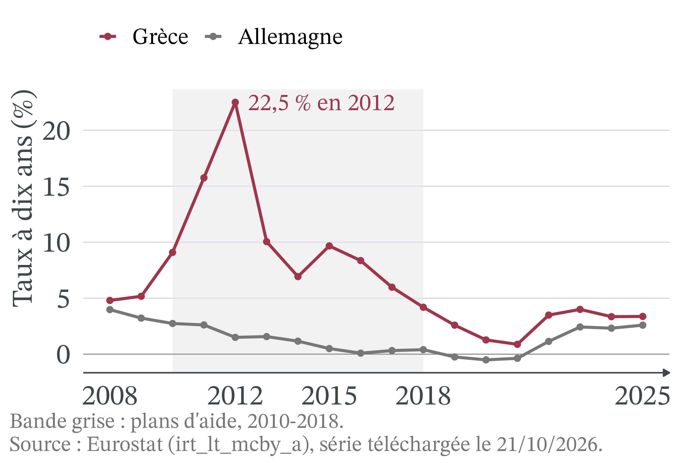
- L’écart mesure la méfiance des prêteurs : 21 points en 2012.
- Le taux du marché n’est pas le taux apparent : depuis 2012, l’État doit surtout des prêts des plans d’aide, à taux réduits (257 Md€ sur 363 Md€ fin 2025) ; ses titres ne remontent qu’après 2018. Son taux apparent ne dépasse jamais 4,7 %.
La règle k × d appliquée à la Grèce en 2010
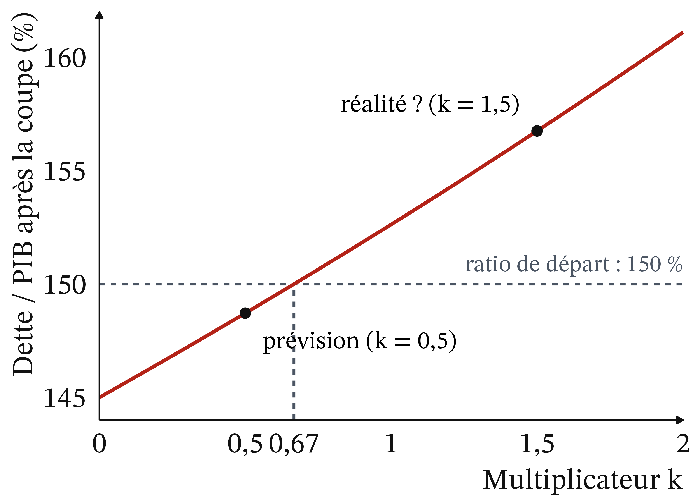
- 2010 : d ≈ 1,5 (147,8 %), comme dans l’exemple.
- Prévisions : k × d ≈ 0,5 × 1,5 = 0,75 : la dette devait s’alléger.
- k ≈ 1,5 : k × d ≈ 2,25 : elle s’alourdissait à court terme.
Effets de répartition : en 2013, chômage supérieur à 20 % partout
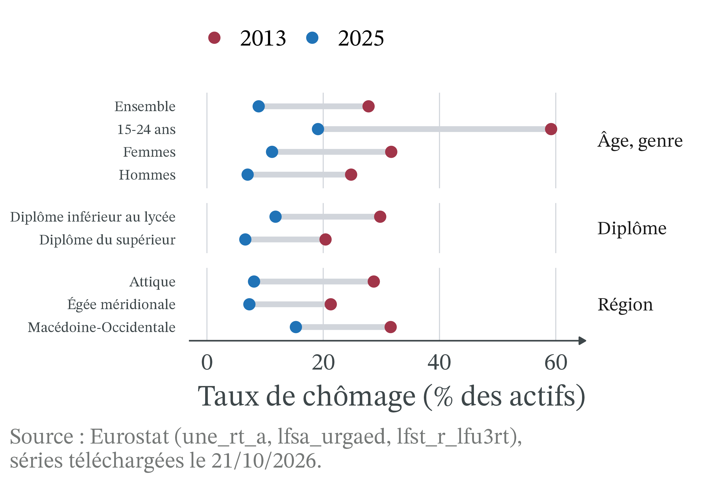
- Rouge : 2013 ; bleu : 2025.
- En 2013, le chômage monte le plus haut chez les jeunes.
- En 2025, il reste plus élevé chez les femmes, chez les moins diplômés et en Macédoine-Occidentale.
Répartition par génération et par revenu : chômage des jeunes et pauvreté
- Par génération : chez les 15-24 ans actifs, le chômage passe de 26,1 % en 2009 à 59,2 % en 2013, puis 19,1 % en 2025 (Eurostat). De 2010 à 2017, le solde migratoire est « largement négatif » (DG Trésor, 03/11/2025) ; il redevient positif depuis 2022.
- Par revenu : risque de pauvreté ou d’exclusion sociale de 28,1 % en 2008 à 36,0 % en 2014 (Eurostat, définition « Europe 2020 »).
Solde migratoire : négatif de 2010 à 2017, au plus bas en 2013
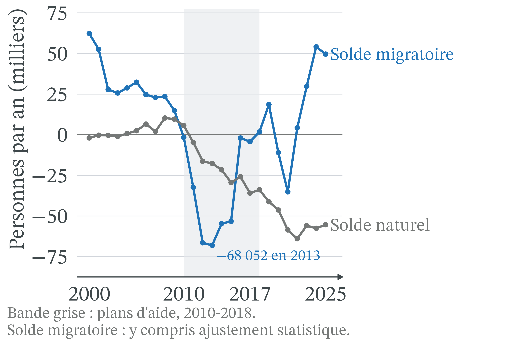
- De 2010 à 2017, 282 633 personnes de plus sont parties qu’arrivées ; 68 052 en 2013.
- Solde redevenu positif depuis 2022.
- Depuis 2011, les décès dépassent chaque année les naissances.
Source : Eurostat (demo_gind), téléchargé le 22/10/2026 ; 2025 provisoire.
Athènes, 21 juin 2015 : le coût politique et social de l’austérité

Photo : DTRocks, CC BY-SA 4.0, Wikimedia Commons (image réduite).
- Manifestation contre l’austérité place Syntagma, deux semaines avant le référendum du 5 juillet sur les conditions posées par les créanciers.
- Ce coût fait partie du bilan, au même titre que le PIB et la dette.
Les créanciers ont partagé la perte, inégalement
- Investisseurs privés, surtout des banques : décote de 53,5 % sur leurs obligations grecques en 2012 (MES).
- Créanciers publics (zone euro, fonds européens, FMI) : environ 289 Md€ prêtés, remboursés à des taux réduits et sur des durées allongées.
- Les Grecs : hausses d’impôts, coupes, puis une reprise lente : +11 % de PIB réel de 2018 à 2024, moins de 2 % par an.
Sources : MES, consulté le 21/10/2026 ; Eurostat, calculs du cours.
Analyse positive : il n’existait pas de scénario « sans austérité » simple
- En 2010, le solde primaire grec était de −5,3 % du PIB et l’État ne pouvait plus emprunter sur les marchés.
- Sans prêts, il aurait dû combler ce déficit d’un coup, ou cesser de payer ses créanciers.
- Les plans d’aide ont étalé l’ajustement : la question porte sur son rythme.
- Bilan mesuré : PIB réel de 2025 inférieur de 13,9 % à 2008, en volume.
Source : Eurostat (gov_10dd_edpt1, nama_10_gdp), séries téléchargées le 21/10/2026 ; calculs du cours.
Controverse : le rythme de l’ajustement budgétaire grec
Analyse positive (ce qui est : mécanismes et effets, vérifiables)
- Le multiplicateur a été sous-estimé au début de la crise (Blanchard et Leigh, 2013).
- Le ratio a monté tant que r dépassait g, puis baissé vite avec la croissance et des excédents primaires.
Analyse normative (ce qui devrait être : dépend de jugements de valeur)
- Le rythme : récession courte et brutale, ou ajustement plus lent et plus coûteux en prêts ?
- Le partage du fardeau et la conditionnalité : créanciers ou contribuables ? un prêteur peut-il imposer des réformes ?
Trois écoles : keynésiens, équivalence ricardienne, austérité expansive
- Keynésiens : en pleine récession, le multiplicateur est élevé ; l’austérité y est contre-productive.
- Équivalence ricardienne (Barro, 1974) : une baisse d’impôts financée par l’emprunt est compensée par l’épargne des ménages ; multiplicateur inférieur à 1.
- Austérité expansive (Giavazzi et Pagano, 1990) : au Danemark et en Irlande, dans les années 1980, une forte austérité a été suivie d’une reprise : un ajustement crédible peut rétablir la confiance.
Le cas grec penche du côté keynésien, sans condamner la consolidation
- Le cas grec de 2010-2013 penche du côté keynésien : un multiplicateur élevé en pleine récession.
- Mais Blanchard et Leigh préviennent : leurs résultats « n’impliquent pas que la consolidation budgétaire soit indésirable » (notre traduction).
- Ils mesurent son coût de court terme, pas son bien-fondé.
Le MES : un traité intergouvernemental qui encadre la conditionnalité
Le Mécanisme européen de stabilité (MES) a été créé en octobre 2012 par un traité intergouvernemental, hors du cadre juridique de l’Union européenne. L’État qui demande son aide prépare un programme d’ajustement macroéconomique ; l’aide est versée par tranches et peut être interrompue si les engagements ne sont pas tenus.
Les deux premiers plans grecs ont précédé ce cadre ; le troisième (2015) en relève.
À retenir
- Une baisse de la dépense publique réduit le PIB de k fois son montant : le multiplicateur joue pour l’austérité comme pour la relance.
- En 2010, les prévisions supposaient k ≈ 0,5 ; il était plutôt supérieur à 1.
- Δd ≈ (r − g) × d − s : quand r dépasse g, la dette fait boule de neige.
- À court terme, une coupe fait monter le ratio si k × d > 1.
- « A marché » dépend de l’objectif, du rythme et de qui paie : un jugement normatif.
Plan de dissertation : ce que dit l’outil, ce qu’il ne tranche pas
Sujet : l’austérité peut-elle réduire la dette publique ?
I. Ce que disent les outils (positif)
- A. Multiplicateur : couper réduit le PIB ; si k × d > 1, le ratio monte à court terme.
- B. Δd ≈ (r − g) × d − s : le ratio baisse quand la croissance dépasse le taux d’intérêt.
II. Ce qu’ils ne tranchent pas (normatif)
- A. Le rythme, le partage du fardeau, la conditionnalité.
- B. « A marché » : selon l’objectif (dette, croissance, confiance des prêteurs).
CM 8 · Grèce